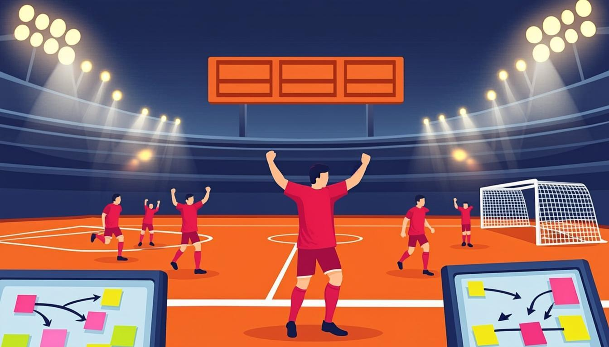

Warm-up
10 minfootball · comebacks · leadership🎧 Listen to the questions
❓ Three questions — click a card to open the sentence starters
Listening — The Final That Felt Like a Sprint
10 minaudio + comprehension
🧩 Before you listen: 10 key words
Click a word — a definition and an example will open. The Russian gloss is there to check your understanding. Listen to the recording of all ten words.
🎧 Track 1 — The Final That Felt Like a Sprint
🌍 Extension — BBC 6 Minute English: Why everyone loves the underdog
From the yearly plan: Why everyone loves the underdog ↗
Listen: why do fans support underdogs? Note 2 past forms and 2 phrases about teams and spirit (Leicester City's 5000-1 season is in there).
Reading — Match Report, Retold as a Retro
7 mintext + tense spottingFrom 3–0 to Legend: the Istanbul Retro
Imagine the retrospective board. What had happened before half-time? Milan had scored three goals; Liverpool had made one substitution that nobody had noticed. What was happening at the break? The Milan players were celebrating; their suits were hanging ready for the ceremony. What changed? The manager's speech changed everything: the team believed again, and three goals went in during six insane minutes.
And the takeaway? Momentum is not a statistic — it is a story people tell themselves. While Milan were protecting a score, Liverpool were rewriting one. The suit detail had existed before the match, but the story did not. Every retro ends the same way here: name the moment the story changed, and act while the other side is still celebrating.
🌍 Extension — BBC Sport: Football
From the yearly plan — pick any match report: bbc.com/sport/football ↗
Retell it in 4 sentences; underline one Past Perfect if you find one.
Grammar Review — the Narrator's Checklist
8 minall past tenses togetherCOLOUR-CODE YOUR STORY — the module's final rule
- Green — Past Simple: the events. We were winning, then they scored, we lost focus.
- Blue — Past Continuous: the scene and parallel actions. While we were celebrating, they were planning the counter-attack.
- Red — Past Perfect: the earlier past. By the break they had scored three.
THE RETRO PHRASES — borrow these
- What had happened before…? — the backstory question
- While X was happening, we… — the parallel action
- By the time we noticed, we had… — the painful lesson
- The takeaway was… — the conclusion
⚙️ One month, one table — all past tenses
| Form | Job in the story | From Module 2 |
|---|---|---|
| shipped, found, scored | events, the plot | Her game crashed while she was streaming. |
| was celebrating, were posting | scene, parallel actions | The team was celebrating in the kitchen. |
| had spent, had finished | the earlier past, results before a moment | By March they had finished only half the levels. |
| had been building, had been testing | duration up to a past point | We had been testing for six hours when the crash appeared. |
| knew, believed, wanted | states — always simple, even in the past | Nobody knew the deadline had moved. |
🔊 Shadowing — the module's best sentences
Track A — the mixed stories (all tenses), Track B — the retro phrases. Listen to a sentence → repeat it out loud in the pause. Two loops per track.
Grammar → Speaking — the main section of the lesson
10 minthe final speech + the football retro🎙 Round 1 — The Final Speech (3 minutes) the whole toolkit
From the plan: the story of your favourite game or project, prepared with your Lesson 7 outline. Requirements: at least 1 Past Continuous, 1 Past Perfect, and zero long pauses. This is the module's graduation speech.
🎙 Round 2 — A Football Match as a Project Retro the Istanbul format
Retell a famous match (or any competition your team lost/won) as a retrospective: we were winning, then they had substituted…, we lost focus. Requirement: the four retro questions — what had happened before, what was happening, what changed, what is the takeaway. 2 minutes.
🩹 Round 3 — Error Autotune (from the plan: find and fix it yourself)
These five sentences reproduce the classic mistakes from this module (including from your own recordings — they are universal). Find the error aloud, fix it, then click to check yourself. Afterwards: run a 1-minute retro of your own QA course using the four retro questions.
Module Test 2 — 15 minutes
15 items + 1 speaking taskno peeking at the rules🎙 Part 4 — Speaking: "Tell what had happened before" (record it)
Three prompts from the plan. For each: say one full sentence with the Past Perfect (or Past Perfect Continuous), then click the card to compare with the model.
Homework
≤ 30 minutes in total🧑🏫 Teacher notes
Goal: consolidate the whole module and measure it: the student retells a match as a retro, delivers the prepared 3-minute story, then passes the 15-minute test without looking back at the rules.
Suggested flow: Warm-up: football questions, flag the past forms → Listening: Istanbul as a retro — pause at each retro question → Reading: colour-mark the text green/blue/red → Grammar: the student says the checklist aloud BEFORE opening the cards — the cards are only the answer key → Speaking: Round 1 is the graduation speech; record it fully → Test: one sitting, 15 minutes, note weak spots for the Module 3 opener.
Success criteria: Round 1 — 1 Continuous + 1 Perfect + no long pauses; Round 2 — all four retro questions answered; the test — 70%+ overall.
After the test: Part 1–2 below 60% → Lessons 5–6; Part 3 → Lesson 7. The full error review happens at the start of Lesson 9.
Threads: the Istanbul story and Dana's scoreboard return in Module 3 (comebacks in Present Perfect); the QA-course retro prepares the "experience" vocabulary of Module 3; Module 3 opens with the Present Perfect vs Past Simple contrast — exactly the border this module has trained.